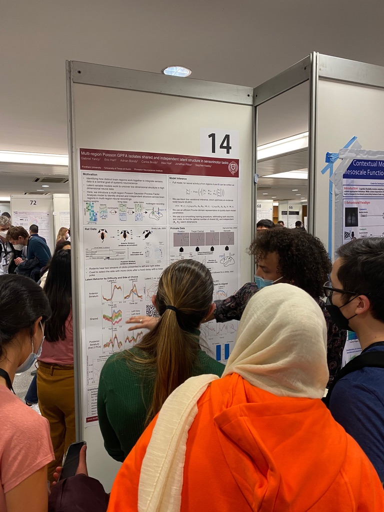

"Mult-region Poisson GPFA Isolates Independent and Shared Dynamics in High Dimensional Neural Recordings," Honors Senior Thesis Presentions, Fordham University, New York, New York. Presentor. May 5, 2022.
A recording of this presentation can be found here. Time: 26:50-52:35
"After Incarceration: Exploring the Community Response," Fordham University, New York, New York. Student Moderator. April 21, 2022.
"Multi-region Poisson GPFA isolates shared and independent latent structure in sensorimotor tasks,"COSYNE, Lisbon, Portugal. Presenting Author. March 2022.
Gabriel Yancy, Eric Hart, Adrian Bondy, Carlos D. Brody, Alex Huk, Jonathan Pillow, Stephen Keeley
Additional information from the COSYNE e-program can be found here.

"Latent structure in multi-region neural spike train data using Gaussian Process factor analysis,' Mary G. Hamilton Research Symposium, Fordham University, New York, New York. Presenter. November 11, 2021.
"Anti-Blackness in the Bronx," Student Spotlight Series, Fordham University, Bronx, New York. Presenter. April 21, 2021.